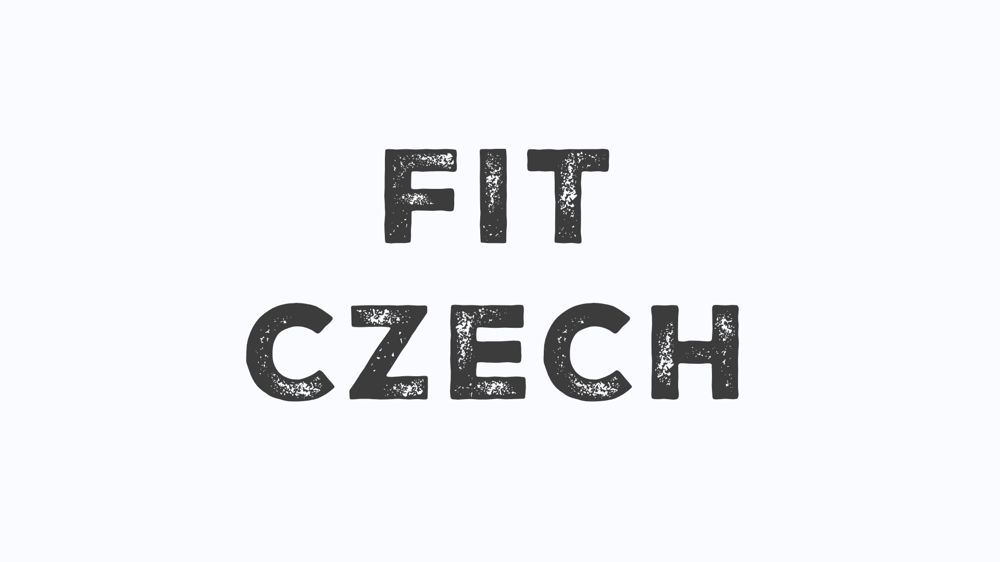
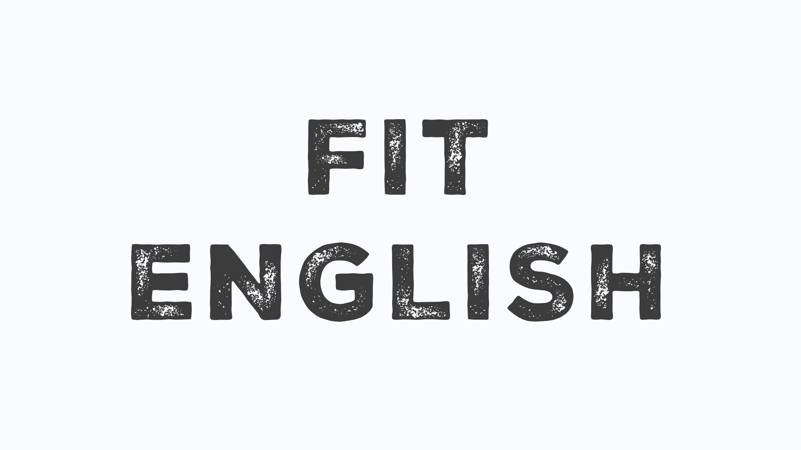
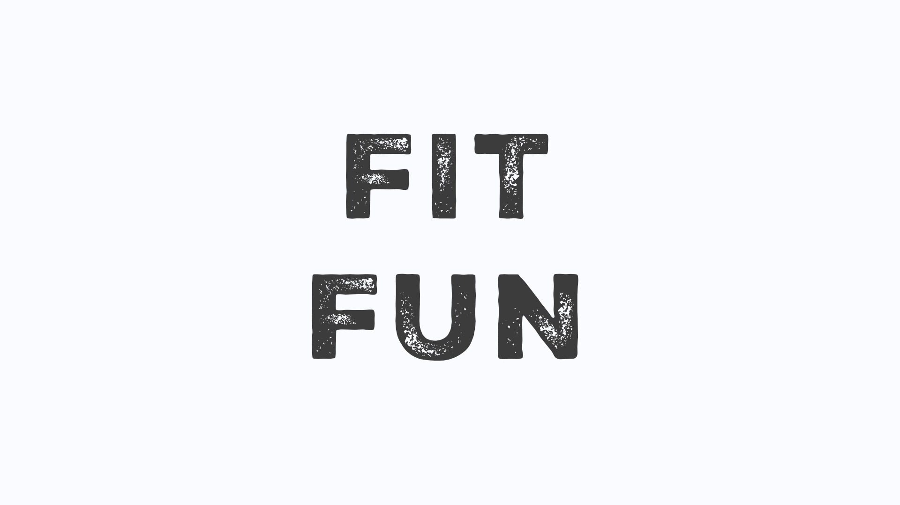
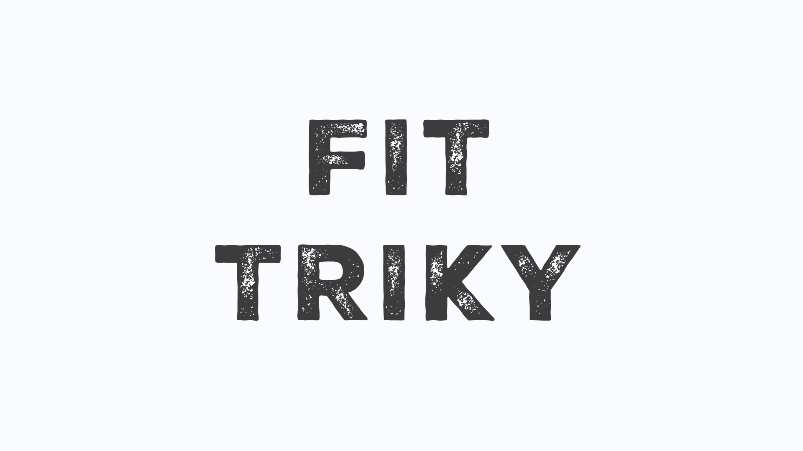
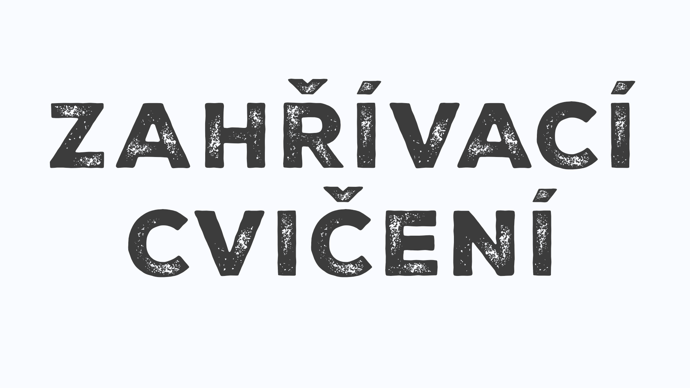
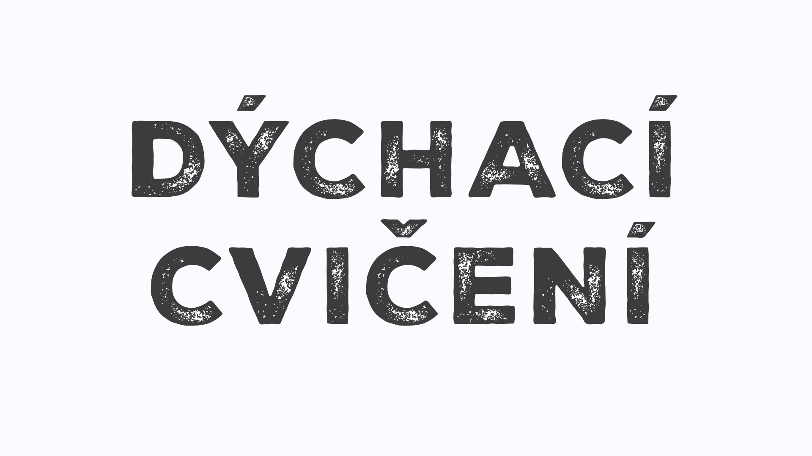
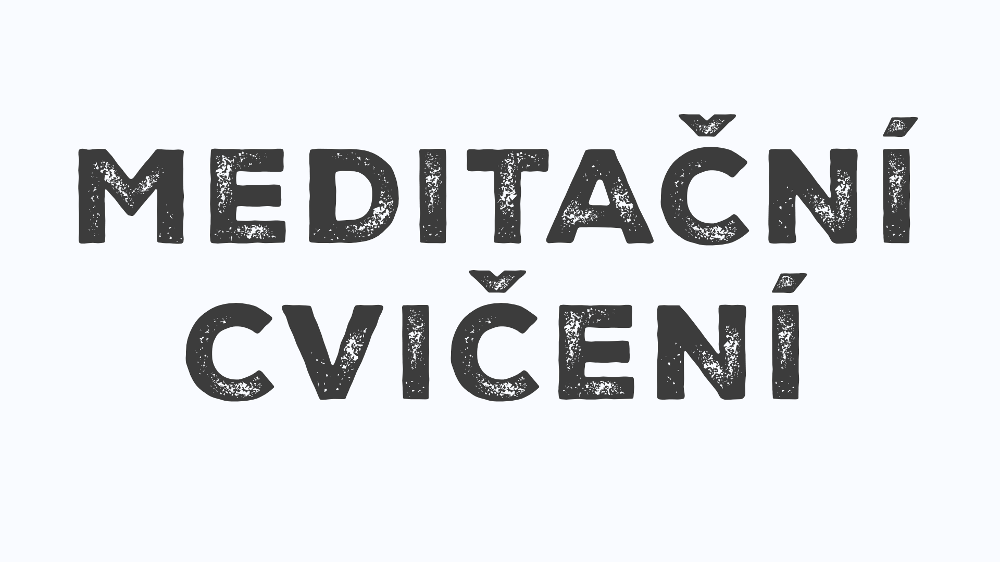
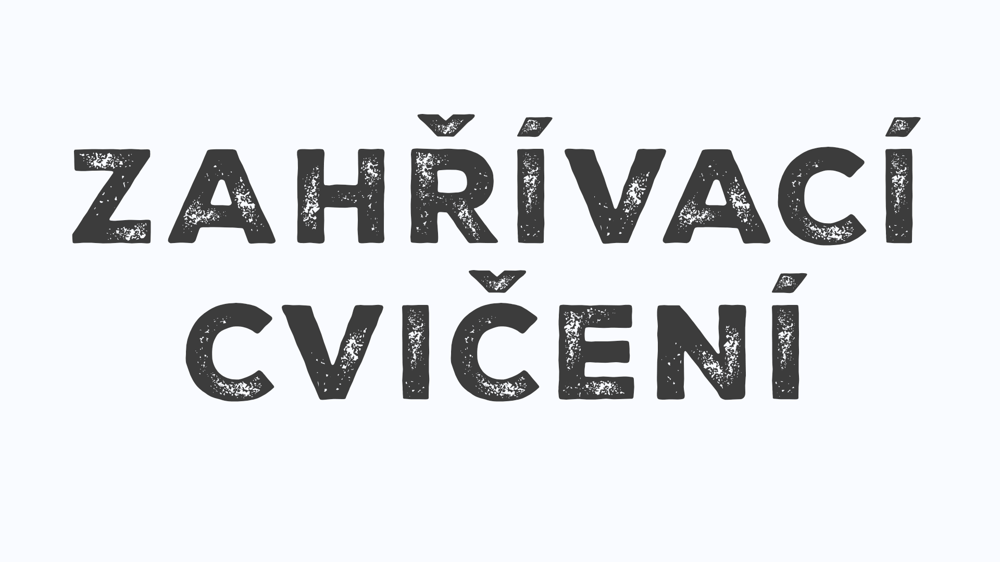
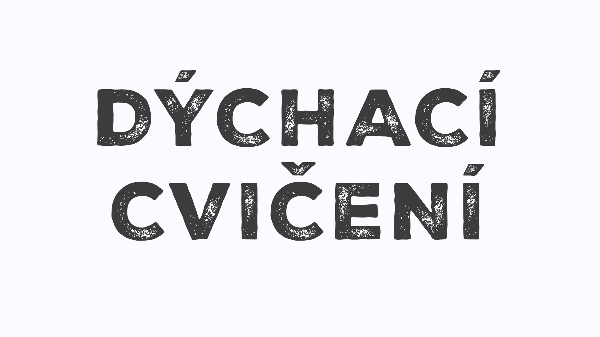
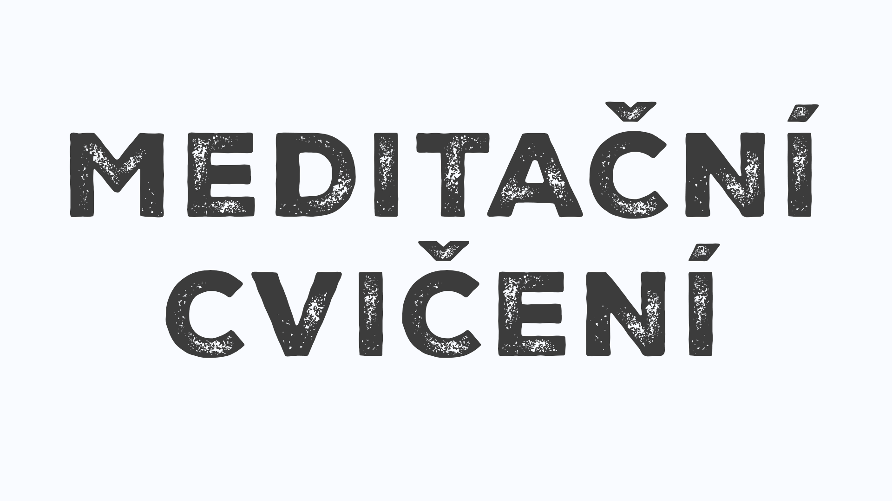

O projektu
Umělecký projekt je součástí bakalářského projektu studenta Honzy Mikulici. Jedná se o projekt zabývající se sportem a transformací.
Autor k práci píše blog, do kterého vkládá své myšlenky a pocity. Jedná se o přímou reflexi jeho sportovní činnosti a zkoumání
celého procesu sportování jako pohybu a transformace těla.
Zajimavé knihy související se sportem a wellbeingem:

O čem mluvím, když mluvím o běhání - Haruki Murakami
Murakami běhá 25 let – každý den deset kilometrů, každý rok maraton. Titul knihy je variací na povídkovou sbírku O čem mluvím, když mluvím o lásce Raymonda Carvera. Kniha „memoárů“ rozhodně zaujme tři typy fanoušků: autorovy skalní příznivce, pro které je kultovní postavou, pak hledače receptu, jak se stát spisovatelem, a nakonec, jak jinak, běžce na dlouhou trať. V knize je jednak soubor esejů o běhu na dlouhé tratě, jednak spisovatelův „diář“ čtyřměsíční přípravy na maraton v New Yorku. Hovoří o fyzické i psychické bolesti, o stárnutí, o tématech, která se mu honí hlavou. Jsou tu úvahy o spisovatelství jako takovém: doba už nepřeje romantickým týpkům, co nasávají nebo berou drogy a píšou skvěle – doba přeje globálním spisovatelům-manažerům. Ostatně přísný režim a skvělá kondice bývají totožné u byznysmenů i u spisovatelů.
(zdroj: www.databazeknih.cz)
Honza si myslí:
„Murakami v několika krátkých kapitolách představuje svou sportovní a osobní cestu, během níž objevuje soužití života spisovatele a sportovce. Popisuje životní problémy, které mu komplikují sportovní činnost, a velmi čtivým způsobem motivuje čtenáře.“
Tao úspěchu - Derek Lin
V mimořádně přitažlivé a čtivé knížce přináší taoistický mistr Derek Lin praktický a systematický výklad duchovní nauky taoismu. Provází čtenáře pěti okruhy života, a ukazuje tedy životní cestu, která je v souladu se základními principy. Úspěšný, dokonalý život získáme jejich naplněním „nyní a zde“, vlastní praxí v každodenním životě. Díky tomu dokážeme plně prožít svůj život, šťastně a úspěšně.
(zdroj: www.databazeknih.cz)
Honza si myslí:
„Tao úspěchu je velmi dobrým začátkem pro studium Tao. V krátkých příbězích autor aplikuje různé kapitoly z jeho učení.“
Etika a sport - Anna Hogenová
Etika sportu. Dobro a zlo - nejstarší pojmy etiky. Pohyb jako fenomén. Fenomenologické pojetí tělesnosti a prožitku. Kinantropologie. Filozofický problém existence. Lidská tvořivost. Sport a příroda. Filozofie a pedagogika. Kalokagathia - základ sportování. Filozofie, etika a doping. Fenomén lži. Fenomén věrnosti. Postmoderní tuláctví.
(zdroj: www.databazeknih.cz)
Honza si myslí:
„Anna Hogenová je vystudovaná sportovkyně a filozofka, což se v jejím textu výrazně projevuje. Četba je vhodná pro čtenáře, kterým nedělá problém filozofická literatura, neboť se autorka v knize často odkazuje na různé filozofy. Rozebírá však i zajímavá témata, jako jsou doping, kalokagathie či pedagogika sportovní výchovy.“
Zajimavé filmy a seriály související se sportem a wellbeingem:
Don't Die: The Man Who Wants to Live Forever
Neumírání: O muži, který chce žít věčně
Dokument o bohatém podnikateli Bryanu Johnsonovi, který neváhá investovat do experimentů s vlastním tělem. Chce totiž přelstít stárnutí a žít déle než kdokoli před ním.
(zdroj: Netflix)
Honza si myslí:
„Dokument zachycuje život Bryana Johnsona, který bojuje se stárnutím a snaží se snížit svůj biologický věk. Představuje jeho každodenní rutinu a přísná pravidla, jimiž se řídí. Pro ‚běžného člověka‘ je tento způsob života téměř nemožný, ale při sledování si v určitých momentech říkáte, že by přece jen šlo něco aplikovat.“
Headspace Guide to Meditation
Velký průvodce meditací
Headspace představuje příjemně animovaný pohled na výhody meditace a nabízí techniky a instrukce, abyste se do toho mohli pustit i vy.
(zdroj: Netflix)
Honza si myslí:
„Seriál vás příjemnou animovanou formou uvede do světa meditace a seznámí s osobními prožitky vypravěče. Pro začátečníky je naprosto vhodný.“
Headspace Guide to Sleep
Velký průvodce spánkem
Naučte se lépe spát. V každém dílu se probírají různé rozšířené omyly, zazní pár dobrých rad a na závěr proběhne zklidňující meditace.
(zdroj: Netflix)
Honza si myslí:
„Tento seriál vás tentokrát provede meditací vhodnou pro spánek. Dozvíte se zajímavé informace a naučíte se techniky pro lepší snový život.“
Headspace: Unwind Your Mind
Velký průvodce uvolněním mysli
Chcete se uvolnit, meditovat nebo se pořádně vyspat? Tenhle interaktivní speciál vám nabízí pomoc ušitou na míru vašemu způsobu myšlení nebo aktuální náladě.
(zdroj: Netflix)
Honza si myslí:
„Interaktivní forma meditace, při které si sami zvolíte, co chcete v daný moment praktikovat, a jste strůjcem svého zážitku.
Bohužel v současné době není dostupná na Netflixu. :(“
Zajimavé webové stránky související se sportem a wellbeingem:
FitFab Strong
V Česku chyběl kvalitní fitness program s důrazem na techniku, který by ale byl zároveň zábavný.
FITFAB Strong je online fitness program natočený na živou hudbu, který je dostupný zdarma na YouTube. Cílem je zvednout Čechy a Slováky z gaučů a ukázat jim, že si mohou zamilovat pohyb bez ohledu na věk nebo váhu.
„Splnila jsem si sen a vy se právě stáváte jeho součástí. Buďte FIT, buďte FABulous, buďte Strong. Staňte se FITFAB Strong.“
Andy Voříšková (Pavelcová), autorka projektu
(zdroj: fitfabstrong.cz)
Honza si myslí:
„Cvičit s FitFab Strong jsem začal, když byly k dispozici pouze tři série – Strong, Stronger a Light. V současné době je na výběr velké množství sérií zaměřených na různé typy cviků, od jednoduchých lekcí, které se soustředí na těhotenské cvičení, jógu, flexibilitu a mobilitu, až po náročnější tréninky, při nichž si dáte zabrat svalům, zlepšíte výdrž kardiem nebo si užijete odlehčená cvičení zaměřená na tanec. Tento program a tým jsem si za ty roky velmi oblíbil, a když si chci pořádně máknout, Strong – Stronger – Strongest jsou pro mě nejlepší volby.“
Playlisty na cvičení:
    






(Žádné informace nesmí být považovány za lékařské nebo jiné zdravotní poradenství. Aplikování vybraných cvičení je na vlastní nebezpečí a autor se zprošťuje jakékoliv odpovědnosti za případné zranění nebo škody. V případě zdravotních komplikací konzultujte s vaším lékařem.)
(naposledy aktualizování: 24.3.2025)